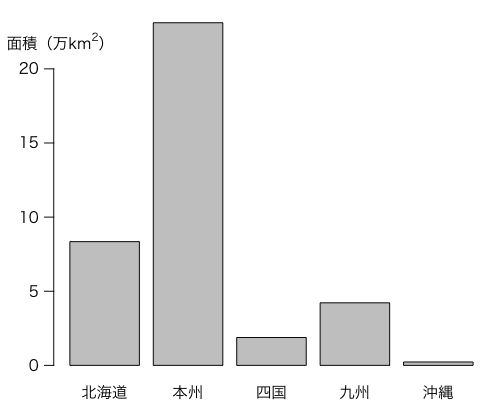

データの例として 統計局ホームページ/日本統計年鑑－第1章 国土・気象 の「1 - 1 国土構成島数，面積及び周囲」の面積データを使ってみましょう。
| 地域 | 面積（km2） |
|---|---|
| 北海道 | 83457 |
| 本州 | 231113 |
| 四国 | 18792 |
| 九州 | 42191 |
| 沖縄 | 2276 |
これをRに打ち込むにはいろいろな方法がありますが，ここでは簡単にベクトルとしてみます。
地域 = c("北海道","本州","四国","九州","沖縄")
面積 = c(83457,231113,18792,42191,2276) / 10000
面積は km2 単位では値が大きすぎるので，万km2 単位にするために10000で全体を割っています。
グラフを描く前に，Macの場合は par(family="HiraKakuProN-W3")
などと打ち込んで日本語のフォントを設定しておきます。
地域ごとの面積を棒グラフにする際の基本は
barplot(面積, names.arg=地域)
です。さらに縦軸にラベルを付けるには
barplot(面積, names.arg=地域, ylab="面積（万km^2）")
とします。もう少し凝ると，次のようになります。
par(las=1) # 縦軸の文字を横向きにしない（las: label style）
par(mgp=c(2,0.8,0)) # 軸マージン（デフォルト: c(3,1,0)）
barplot(面積, names.arg=地域, ylab="面積（万km^2）")
km^2ではなくkm2のように上付きにするには，
expression(paste("面積（万", km^2, "）"))
のような書き方をします。
最後に，さらに凝ってみます：
barplot(面積, names.arg=地域)
axis(2, labels=expression(paste("面積（万", km^2, "）")),
at=20, hadj=0.3, padj=-1, tick=FALSE)

Last modified: 2011-11-22 15:15:11